Neural simulators promise efficient surrogates for physics simulation, but scaling them is bottlenecked by the prohibitive cost of generating high-fidelity training data. Pre-training on off-the-shelf geometries offers a natural alternative, yet faces a fundamental gap: supervision on static geometry alone ignores dynamics and can lead to negative transfer on physics tasks.
We present GeoPT, a unified pre-trained model for general physics simulation based on lifted geometric pre-training. The core idea is to augment geometry with synthetic dynamics, enabling dynamics-aware self-supervision without physics labels. Pre-trained on over one million samples, GeoPT consistently improves industrial-fidelity benchmarks spanning fluid mechanics for cars, aircraft, and ships, and solid mechanics in crash simulation, reducing labeled data requirements by 20-60% and accelerating convergence by 2x. These results show that lifting with synthetic dynamics bridges the geometry-physics gap, unlocking a scalable path for neural simulation.
Geometry-only supervision is meaningless for physics.
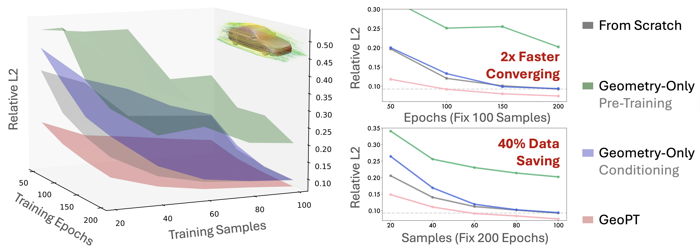
We perform dynamics-lifted self-supervised pre-training.
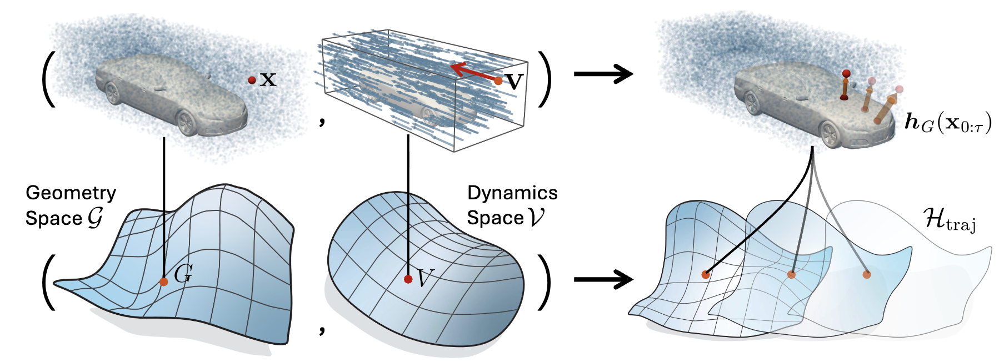
🏆 Successfully bridge the geometry-physics gap in the dynamics-lifted space;
🚀 Generate millions of training samples in days, 1000x faster than physics supervision;
🔥 fast fine-tuning by configuring dynamics condition to “prompt” the pre-trained model.
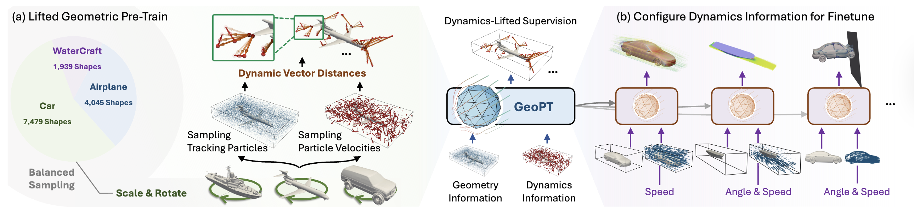
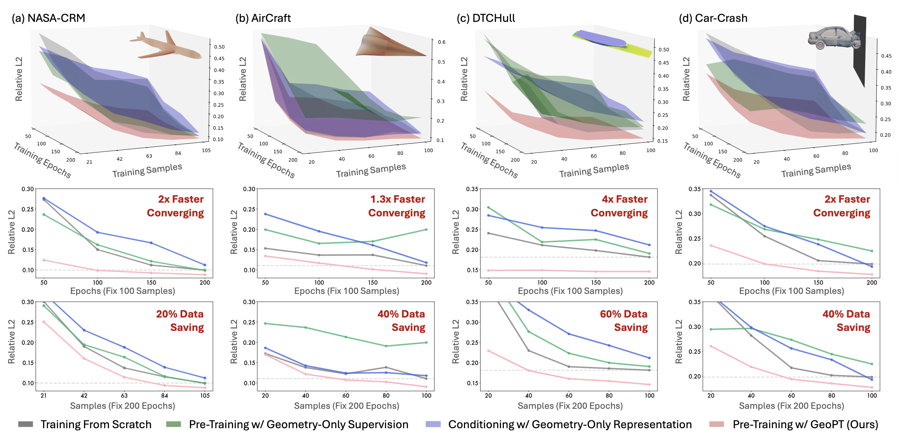
Geometry-only pre-training refers to optimizing the model to predict vector distance function (VDF) based on spatial position. Geometry-only conditioning adopts the geometry representation extracted by pre-trained Hunyuan-3D as an auxiliary feature.
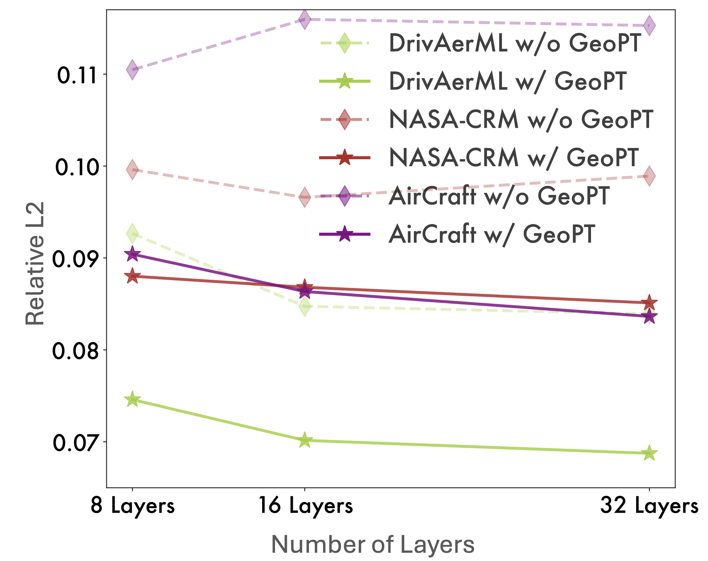
Although the backbone Transolver shows nice scalability in sufficient data scenarios, it still faces a scaling bottleneck in limited-data industrial simulation, which may be caused by overfitting.In contrast, GeoPT that is pre-trained with large-scale geometry data can regularize the model hypothesis space to alleviate potential overfitting, thereby consistently benefiting from increasing model size. Such scalability can serve as the basis for building physics foundation model.
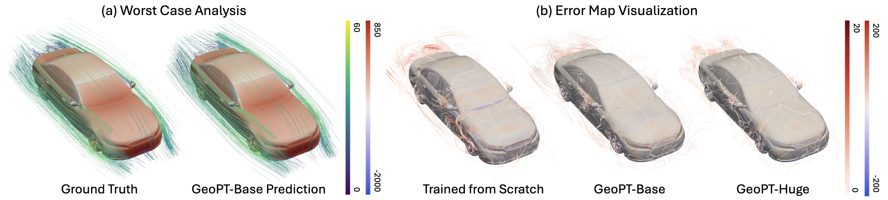
(a) visualization of the prediction results with the worst relative L2 performance in DrivAerML, (b) the error map of surface pressure and surrounding velocity, where the huge model (32 layers) yields more accurate results than base (8 layers).
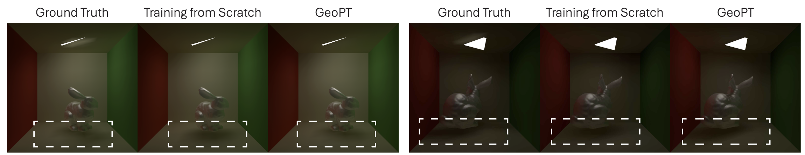
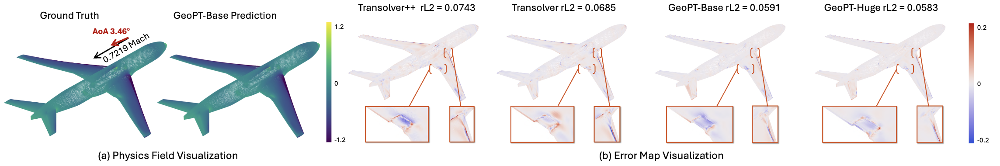
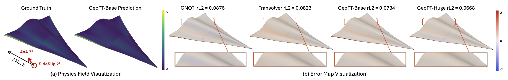
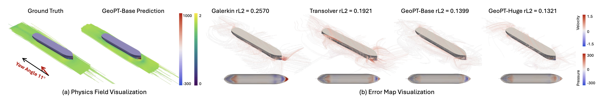
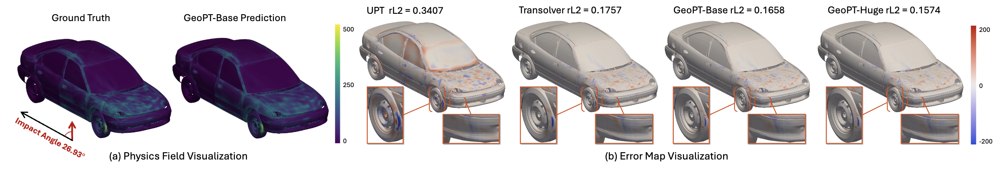
@article{wu2026GeoPT,
author = {Haixu Wu, Minghao Guo, Zongyi Li, Zhiyang Dou, Mingsheng Long, Kaiming He, Wojciech Matusik},
title = {GeoPT: Scaling Physics Simulation via Lifted Geometric Pre-Training},
booktitle = {arXiv preprint arXiv:},
year = {2026},
}